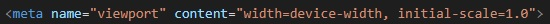
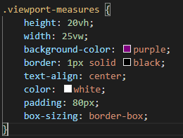

Etiqueta Viewport
Viewport Measures
- vw (viewport width)
- vh (viewport height)
Estas dos siempre tomaran como eje referencial al viewport del documento
Media Query
Estos son conjuntos de reglas CSS que permiten reorganizar el contenido dependiendo de las condiciones de visualizacion del documento
-
@media (min-width: 460px) {}
Las reglas se aplican a partir de los 461px de width -
@media (max-width: 460px) {}
Las reglas se aplican solo si hay como maximo 460px de width -
@media (min-width: 460px) and (orientation: landscape) {}
Las reglas se aplican solo si hay como maximo 460px de width y la orientacion del dispositivo esta en landscape